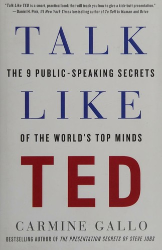

Talk Like TED
Carmine Gallo · Public speaking
«Talk Like TED»
- Passione
- Novità
- Storie
- Delivery
🧭Introduzione
- Titolo originale: Talk Like TED: The 9 Public-Speaking Secrets of the World's Top Minds, St. Martin's Press, 4 marzo 2014. Bestseller top 10 del Wall Street Journal.
- In italiano: Comunicare come Steve Jobs e i migliori oratori degli eventi TED. I 9 segreti di un discorso vincente (Vallardi).
- Chi è Gallo: ex giornalista di CNN e CBS, oggi coach di comunicazione di grandi aziende (Intel, Cisco, HP) e autore di The Presentation Secrets of Steve Jobs.
- Perché conta oggi: non devi salire su un palco TED: ti serve ogni volta che presenti un progetto, un preventivo, una riunione, un'idea al capo. Le idee buone non si difendono da sole. Utile a chi fa pitch, a chi tiene riunioni, a chi insegna — e a chi ha paura di parlare in pubblico.
📘Riassunto
- La scintilla centrale: un discorso efficace non è talento, è un insieme di tecniche riconoscibili e apprendibili. Gallo ha analizzato oltre 500 presentazioni TED (più di 150 ore di video) e ha intervistato i relatori più visti insieme a neuroscienziati, psicologi ed esperti di comunicazione, per isolare i pattern comuni.
- La struttura: tre parti da tre capitoli ciascuna. Emozionale → passione (1), storia (2), conversazione (3). Nuovo → insegnare qualcosa di nuovo (4), momento a bocca aperta (5), umorismo (6). Memorabile → i 18 minuti (7), multisensorialità (8), autenticità (9). Ogni capitolo combina un segreto, esempi commentati di talk reali, la scienza che lo spiega e consigli operativi ("TEDnotes").
- Il punto di svolta: smettere di vedere il discorso come una performance di sicurezza e iniziare a vederlo come un'idea-passione che passa per una storia, si condensa in pochi minuti e si prova finché non sembra spontanea.
- L'eredità oggi: il formato TED è diventato lo standard di fatto delle presentazioni moderne. I meccanismi citati — accoppiamento neurale, carico cognitivo, novità e dopamina — restano i pilastri della divulgazione e del pitch. Nota onesta: alcune cifre che circolano (per esempio il "limite di 10-15 minuti di attenzione") hanno basi sperimentali più fragili di quanto sembri; la lezione vera è la disciplina del taglio, non il numero magico.
💡Concetti chiave
- La passione non è la vernice del discorso: è il materiale con cui lo costruisci.
- Le storie fanno il grosso del lavoro: i dati convincono, le storie muovono.
- La naturalezza non si improvvisa: si costruisce con la ripetizione.
- Porta il pubblico su un terreno che non conosce: insegnagli una cosa nuova.
- Un solo momento a bocca aperta vale più di dieci slide perfette.
- Diciotto minuti sono una cortesia cognitiva, non un limite.
- Resta nella tua corsia: il tuo stile imperfetto batte la copia perfetta.
📖1. La passione è il contenuto, non la vernice.
- Definizione: nel primo segreto ("Unleash the Master Within") Gallo sostiene che il pubblico sente la passione genuina in pochi secondi e che è quasi impossibile appassionare gli altri su un tema che non ti appartiene. La domanda guida non è "di cosa voglio parlare", ma "cosa fa battere il mio cuore".
- Esempio: Aimee Mullins, atleta amputata bilateralmente, non parla di protesi ma di potenziale umano; Cameron Russell, modella, apre il suo talk coprendosi con gonna e maglia da ufficio per parlare dell'autostima delle ragazze. Parlano di ciò che sta loro davvero a cuore, non di ciò per cui sono famose.
- Come applicarlo: prima di aprire qualsiasi slide, scrivi tre righe: perché questo progetto mi riguarda, cosa cambia per chi mi ascolta, quale problema mi sta a cuore. Prendine una e falla aprire il discorso.
- Errore comune: scegliere l'argomento che "suona professionale" ed elencare contenuti tecnici: il risultato è corretto e dimenticabile.
- Collegamento: lo studio di Melissa Cardon (Journal of Business Venturing, 2012) su 241 startup presentate a un network di angel investor: la "passione percepita" risultava il terzo criterio di valutazione su 13, sopra formazione, età ed esperienza. È l'"ethos" di Aristotele reso misurabile.
📖2. Le storie fanno il 65% del lavoro.
- Definizione: "Master the Art of Storytelling": i dati da soli attivano soprattutto l'area del linguaggio, mentre una storia coinvolge anche aree sensoriali, motorie ed emotive — il cervello di chi ascolta si "sincronizza" con quello di chi racconta (la ricerca di Uri Hasson, Princeton, citata da Gallo).
- Esempio: a TED 2012 l'avvocato Bryan Stevenson ottiene il più lungo applauso in piedi della storia di TED e quel giorno la sua organizzazione riceve un milione di dollari di donazioni. Gallo smonta le sue 4.057 parole: 65% storie (pathos), 25% dati, 10% credenziali — e la prima statistica arriva solo al quinto minuto.
- Come applicarlo: mappa il discorso in tre blocchi: una storia personale (conflitto, nodo, risoluzione), due o tre dati a sostegno, una credenziale che basta. La storia si costruisce prima delle slide.
- Errore comune: aprirsi con il curriculum e con slide piene di numeri: convinci l'intelletto ma non scatti nessuna sinapsi emotiva.
- Collegamento: Made to Stick dei fratelli Heath: le idee restano quando hanno un volto, un corpo, un dettaglio concreto ("principio della concrezione").
📖3. La naturalezza si costruisce, non si improvvisa.
- Definizione: "Have a Conversation": i migliori oratori TED sembrano parlare con un amico davanti a una folla, ed è l'effetto di prove ossessive, non di carisma nato.
- Esempio: Jill Bolte Taylor ha ripetuto il suo My Stroke of Insight 200 volte prima di salire sul palco; il video ha superato i 15 milioni di visualizzazioni e le è valso l'invito da Oprah.
- Come applicarlo: leggi il testo ad alta voce (mai solo a mente) almeno 10 volte, registrati una volta, riscrivi dove ti sei perso, poi ripeti finché non padroneggi la struttura ma non le parole: così puoi guardare il pubblico e adattarti.
- Errore comune: imparare tutto parola per parola: il copione memorizzato produce il tono piatto della lettura, che il pubblico sente al volo.
- Collegamento: la pratica deliberata di K. Anders Ericsson (Peak): la "naturalezza" è l'ultimo stadio di un allenamento lungo. Carnegie lo sapeva già nel 1915.
📖4. Porta il pubblico su un terreno che non conosce.
- Definizione: "Teach Me Something New": il cervello ignora ciò che ha già archiviato, mentre la novità libera dopamina, che secondo la neuroscienziata Martha Burns citata da Gallo è il "tasto di salvataggio" della memoria: c'è dopamina, l'informazione resta; non c'è, svanisce.
- Esempio: Gallo usa un test semplice per il messaggio: riesci a condensarlo in una frase brevissima (lui parla di 140 caratteri, lo standard Twitter di allora)? Se no, non è ancora chiaro nemmeno per te.
- Come applicarlo: trova il "pezzo nuovo" del tuo intervento — un dato del tuo cliente, un confronto inedito, un errore diffuso che smonti — e mettilo in una frase da una riga: è quella che dovrebbero ripetere il giorno dopo.
- Errore comune: buttare dentro tutto quello che si sa: il sovraccarico non è ricchezza, è rumore.
- Collegamento: la "curiosity gap" di George Loewenstein: la curiosità nasce dal divario tra ciò che sappiamo e ciò che vorremmo sapere.
📖5. Un solo momento a bocca aperta.
- Definizione: "Deliver Jaw-Dropping Moments": un evento "carico emotivamente" — sorpresa, shock, paura — fa scaricare dopamina e aggancia il ricordo. Dura pochissimo, ma è la parte che tutti ricordano e raccontano.
- Esempio: al TED 2009 Bill Gates, parlando di malaria, apre un barattolo di zanzare e le lascia libere in sala: "Non c'è ragione perché solo i poveri debbano fare questa esperienza". Lo stunt occupa meno del 5% dei suoi 18 minuti.
- Come applicarlo: scegli uno solo: una demo dal vivo, un oggetto fisico portato in sala, una frase azzeccata, un dato scioccante messo a confronto con qualcosa di quotidiano. Posizionalo a metà discorso e ricollegalo esplicitamente al tuo messaggio.
- Errore comune: voler stupire su ogni slide: cinque colpi di scena non fanno cinque colpi, fanno rumore — e il pubblico smette di crederti.
- Collegamento: la "peak-end rule" di Daniel Kahneman: giudichiamo un'esperienza dal momento più intenso e dalla fine, non dalla media. Investi su un picco e su una chiusura pulita.
📖6. Diciotto minuti sono una cortesia cognitiva.
- Definizione: "Stick to the 18-Minute Rule": ascoltare è faticoso, e l'ascolto prolungato accumula quello che Gallo chiama "cognitive backlog": la stanza si svuota di energia prima che delle idee. Il limite forza la chiarezza — se non sai tagliare, forse non hai ancora capito bene cosa vuoi dire.
- Esempio: David Christian ha raccontato 13 miliardi di anni di storia in 18 minuti ed è nato un movimento scolastico ("Big History"). Il curatore Chris Anderson: 18 minuti sono abbastanza per essere seri e abbastanza brevi per l'attenzione — e sono la durata di una pausa caffè, per questo i video vengono condivisi. Se devi essere più lungo, inserisci storie, video o dimostrazioni ogni 10 minuti, e fai lavorare più sensi: parole e immagini restano più delle parole sole.
- Come applicarlo: prendi la presentazione che hai già e taglia almeno il 40%: via la storia dell'azienda, le slide-riepilogo, i "completerò nei prossimi slide". Poi rileggi ad alta voce con il cronometro.
- Errore comune: riempire il tempo disponibile perché "tanto ce l'ho": il pubblico non ti giudica per quanto hai detto, ma per cosa ricorda.
- Collegamento: il vincolo intelligente stimola la creatività (Matthew May, ripreso da Gallo). E sempre per onestà intellettuale: una revisione del 2016 ha trovato poche prove solide per il famoso limite di "10-15 minuti di attenzione" — la vera lezione è il taglio, non l'orologio.
📖7. Resta nella tua corsia.
- Definizione: due segreti — "Lighten Up" e "Stay in Your Lane" — dicono la stessa cosa: umorismo autentico e stile personale battono la copia perfetta. I migliori oratori non "raccontano battute" (a una battuta di livello servono anni, come per Seinfeld): usano aneddoti, osservazioni, autoironia, citazioni altrui.
- Esempio: quando una ragazza disse a Oprah Winfrey "voglio essere la prossima Oprah", la risposta fu: "No, tu no". E a Jill Bolte Taylor l'amica più cara disse che il finale del suo talk era informativo ma non vulnerabile: lo riscrisse raccontando cosa aveva provato davvero — ed è quella la versione che ha conquistato il mondo.
- Come applicarlo: individua le tre cose che sai fare bene (il tuo umorismo, la pazienza, la profondità tecnica, l'empatia con il silenzio) e costruisci sopra solo quelle. Quando prepari una battuta, sostituiscila con un'osservazione vera che è successa a te.
- Errore comune: copiare ritmo, frasi e gesti di un oratore che ammiri: il risultato suona "quasi giusto", e il pubblico percepisce lo straniamento prima ancora di saperlo dire.
- Collegamento: Brené Brown e la vulnerabilità come origine della connessione; in termini di Cialdini, la simpatia nasce dalla somiglianza autentica, non dalla performance.
🌍Esempi di oggi
Tre situazioni dove parlare "come al TED" cambia tutto:
- La riunione del lunedì. Invece di 20 slide piene di testo, apri con una storia di 60 secondi ("venerdì un cliente ci ha detto che..."), poi un solo numero e una sola richiesta. La gente ricorda le storie, non gli elenchi.
- Il colloquio di lavoro. Alla domanda "mi parli di lei", i candidati recitano il curriculum. Chi invece racconta la propria passione ("quello che mi fa alzare la mattina è...") e la lega a un risultato concreto resta impresso — è il primo segreto di Gallo: scatena il maestro che è in te.
- Il brindisi a un matrimonio. Tre minuti, un aneddoto vero sugli sposi, una frase sul futuro, stop. Breve, personale, provato ad alta voce una volta: applausi garantiti, a differenza del discorso improvvisato di un quarto d'ora.
🛠️Azioni pratiche
- Scegli una presentazione reale che hai nei prossimi 7 giorni (riunione, pitch, update) e trattala come un mini-TED: scrivi in tre righe cosa ti riguarda davvero e falla aprire il discorso.
- Riscrivi la scaletta in tre blocchi — una storia personale, due dati, una credenziale — e cancella almeno il 40% del testo in slide (Gallo consiglia di restare sotto le 40 parole nelle prime dieci slide).
- Prova tutto ad alta voce almeno 10 volte cronometrando: se superi i 18 minuti taglia contenuto, non velocità. Poi chiedi a una persona: "cosa ricordi di quello che ho detto?" — la sua risposta ti dice se i segreti hanno funzionato.
💎Da portare a casa
"Le idee sono la moneta del XXI secolo" — ma diventano capitale solo se le racconti, le condensi e le provi.
💬Approfondimento in chat
Vuoi che espanda un concetto? Rispondi con il numero (da 1 a 7) o con un tema che ti interessa: public speaking, vendite, persuasione, negoziazione, gestione dello stress, emozioni, carriera.